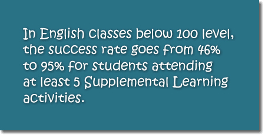
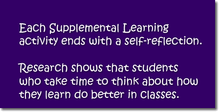
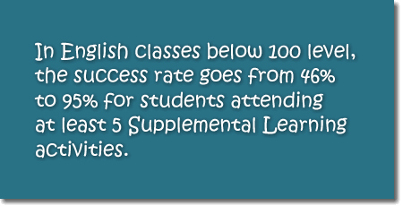
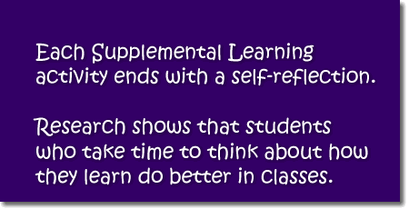

In many of your courses—such as English, history, psychology, and biology—you are given essay exams that you must complete within a limited time frame. As you know, such exams put you under quite a bit of pressure, especially if you don’t know, in advance, what the essay question, or writing prompt, might be. Usually in less than an hour, you must understand what the question is asking you to do, organize your thoughts, and write a coherent response. This activity is created to assist you with this high-stakes process.
|
Student Learning Outcomes
By the end of this activity, you should be able to:
Begin the ActivityOnce you have all the needed materials, you may procede to the activity by clicking on the button below. If at any time you need help, please ask a tutor. Click here to begin. |
Did you know?

 
 
 |